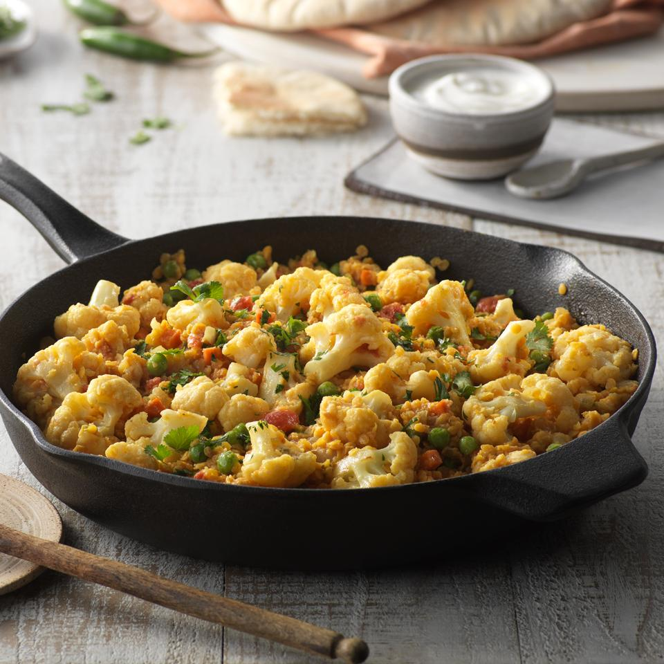

Coconut Red Lentil Curry

Bold and flavourful lentil curry.
Prepared in one skillet with cauliflower and creamy coconut milk. Serve with yogurt and warm naan bread.
Ingredients
- 2 tbsp canola oil
- 1 large head cauliflower, cut into small florets
- 1 cup chopped onion
- 1 tsp minced garlic
- 1 tsp grated fresh ginger
- 1 tsp ground cumin
- 1 tsp ground turmeric
- 1/2 tsp ground coriander
- 1 tsp salt
- 2 (2 1/2 inch) serrano peppers, finely chopped with seeds
- 1 1/2 cups dry red lentils, sorted and rinsed
- 1 (14.5 oz) can diced tomatoes, drained
- 2 cups vegetable broth
- 1 (13.5 oz) can coconut milk
- 1/2 cup diced carrot
- 1 cup frozen green peas
Steps
- In a deep 12-inch skillet, heat 1 tablespoon oil over medium-high heat. Add cauliflower and cook 3 minutes, stirring occasionally, until lightly browned; set aside.
- Reduce heat to medium and add remaining oil. Sauté onion 2 minutes until soft. Add garlic and ginger and cook, stirring, 1 minute. Add cumin, turmeric, coriander, salt and serrano peppers; stir well and cook 1 minute or until spices are fragrant. Add lentils, stir well to coat. Stir in diced tomatoes and broth; bring to a boil. Cover and reduce heat to medium-low, simmer 12 minutes.
- Stir in coconut milk, carrots and cauliflower. Simmer 10 minutes. Add peas and continue to simmer 5 minutes. If desired, top with chopped cilantro and serve with yogurt and warm naan bread.